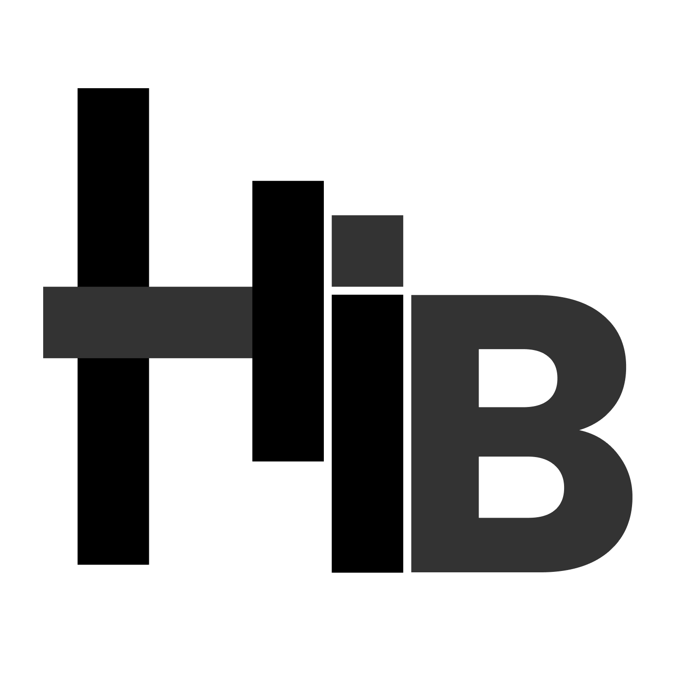

Isaac Bernardino
HiBit Dev
Game Designer & Front-End DEV
Sobre mim
Estudante no desenvolvimento WEB Front-End, utilizo o melhor do mundo WEB para construir seu site com elegância e muita tecnologia:
HTML5 CSS3 JavaScript
Projetos
Para mais detalhes acesse meu Github